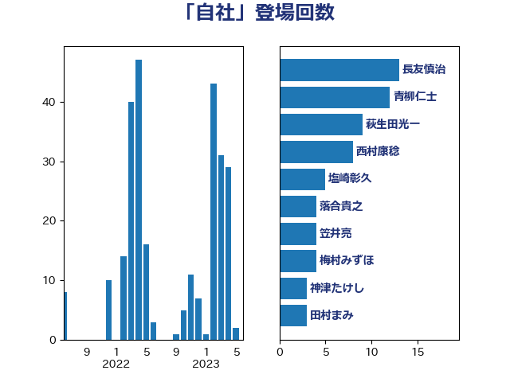

単語「自社」

| 長友慎治 | 国民民主党 | 13 回 |
| 青柳仁士 | 日本維新の会 | 12 回 |
| 萩生田光一 | 自由民主党 | 9 回 |
| 西村康稔 | 自由民主党 | 8 回 |
| 塩崎彰久 | 自由民主党 | 5 回 |
| 落合貴之 | 立憲民主党 | 4 回 |
| 笠井亮 | 日本共産党 | 4 回 |
| 梅村みずほ | 日本維新の会 | 4 回 |
| 神津たけし | 立憲民主党 | 3 回 |
| 田村まみ | 国民民主党 | 3 回 |
| 斉藤鉄夫 | 公明党 | 3 回 |
| 岸田文雄 | 自由民主党 | 3 回 |
| 前原誠司 | 国民民主党 | 3 回 |
| 鈴木俊一 | 自由民主党 | 2 回 |
| 越智俊之 | 自由民主党 | 2 回 |
| 神田憲次 | 自由民主党 | 2 回 |
| 牧島かれん | 自由民主党 | 2 回 |
| 村田享子 | 立憲民主党 | 2 回 |
| 後藤茂之 | 自由民主党 | 2 回 |
| 平林晃 | 公明党 | 2 回 |
| 岩田和親 | 自由民主党 | 2 回 |
| 岩渕友 | 日本共産党 | 2 回 |
| 岡田直樹 | 自由民主党 | 2 回 |
| 小林鷹之 | 自由民主党 | 2 回 |
| 太田房江 | 自由民主党 | 2 回 |
| 加藤勝信 | 自由民主党 | 2 回 |
| 佐々木紀 | 自由民主党 | 2 回 |
| 井坂信彦 | 立憲民主党 | 2 回 |
| 中谷真一 | 自由民主党 | 2 回 |
| ながえ孝子 | 無所属 | 2 回 |
| 長峯誠 | 自由民主党 | 1 回 |
| 野上浩太郎 | 自由民主党 | 1 回 |
| 道下大樹 | 立憲民主党 | 1 回 |
| 角田秀穂 | 公明党 | 1 回 |
| 西村明宏 | 自由民主党 | 1 回 |
| 細田健一 | 自由民主党 | 1 回 |
| 紙智子 | 日本共産党 | 1 回 |
| 篠原豪 | 立憲民主党 | 1 回 |
| 福島みずほ | 社会民主党 | 1 回 |
| 神田潤一 | 自由民主党 | 1 回 |
| 石井正弘 | 自由民主党 | 1 回 |
| 石井拓 | 自由民主党 | 1 回 |
| 矢倉克夫 | 公明党 | 1 回 |
| 田村貴昭 | 日本共産党 | 1 回 |
| 田村智子 | 日本共産党 | 1 回 |
| 田中健 | 国民民主党 | 1 回 |
| 牧山ひろえ | 立憲民主党 | 1 回 |
| 滝波宏文 | 自由民主党 | 1 回 |
| 浅川義治 | 日本維新の会 | 1 回 |
| 河野太郎 | 自由民主党 | 1 回 |
| 河西宏一 | 公明党 | 1 回 |
| 沢田良 | 日本維新の会 | 1 回 |
| 櫻井周 | 立憲民主党 | 1 回 |
| 櫻井充 | 自由民主党 | 1 回 |
| 梶山弘志 | 自由民主党 | 1 回 |
| 柴愼一 | 立憲民主党 | 1 回 |
| 斎藤アレックス | 国民民主党 | 1 回 |
| 平木大作 | 公明党 | 1 回 |
| 川田龍平 | 立憲民主党 | 1 回 |
| 岩谷良平 | 日本維新の会 | 1 回 |
| 山本香苗 | 公明党 | 1 回 |
| 山崎誠 | 立憲民主党 | 1 回 |
| 山口壯 | 自由民主党 | 1 回 |
| 尾崎正直 | 自由民主党 | 1 回 |
| 小沼巧 | 立憲民主党 | 1 回 |
| 小沢雅仁 | 立憲民主党 | 1 回 |
| 小寺裕雄 | 自由民主党 | 1 回 |
| 小倉將信 | 自由民主党 | 1 回 |
| 寺田静 | 無所属 | 1 回 |
| 宮本徹 | 日本共産党 | 1 回 |
| 守島正 | 日本維新の会 | 1 回 |
| 大島九州男 | れいわ新選組 | 1 回 |
| 大串正樹 | 自由民主党 | 1 回 |
| 堂込麻紀子 | 無所属 | 1 回 |
| 住吉寛紀 | 日本維新の会 | 1 回 |
| 伊藤孝恵 | 国民民主党 | 1 回 |
| 中田宏 | 自由民主党 | 1 回 |
| 下野六太 | 公明党 | 1 回 |